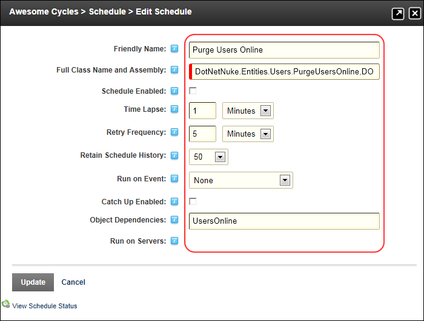

Adding a Task
How to add a scheduled task to the Schedule module.
- Navigate to Host > Advanced Settings > Schedule.
- Click the Add Item to Schedule button.
- In the Friendly Name text box, enter a name for the scheduled job.
- In the Full Class Name and Assembly text box, enter the full class name followed by the assembly name. E.g. DotNetNuke.Services.Log.SiteLog.PurgeSiteLog, DOTNETNUKE
- At Schedule Enabled, to enable this task - OR - to disable this task.
- In the Time Lapse text box, enter a numerical value and then select Seconds, Minutes, Hours, or Days from the drop down list to set the frequency of the task. Leave blank to disable timer for this task.
- In the Retry Frequency text box, enter a numerical value and then select Seconds, Minutes, Hours, or Days from the drop down list to set the time period after a task fails to run before retrying the task. Leave the text box empty to disable retrying failed tasks.
- At Retain Schedule History, select the number of most recent records to be kept.
- At Run on Event, select APPLICATION_START to run this event when the web application (i.e. the site) starts - OR - Select NONE to prevent the event from running each time the application starts.
- Optional. At Catch Up Enabled, to run the event once for each frequency that was missed if the web server is ever out of service and is returned to service.
- In the Object Dependencies text box, enter the tables or other objects that this event is dependent on. E.g. SiteLog,Users,UsersOnline.
- At Run on Servers, select each of the servers that this task should run on.

-
Click the Update button.